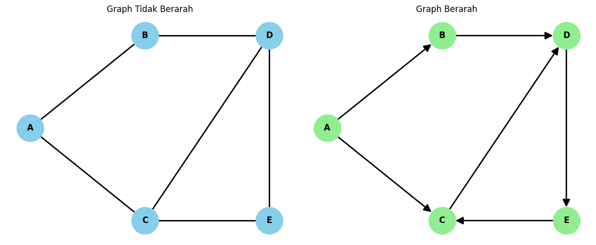
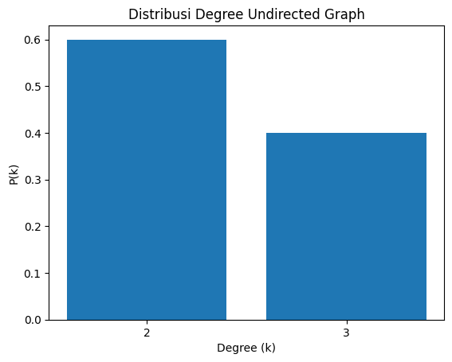
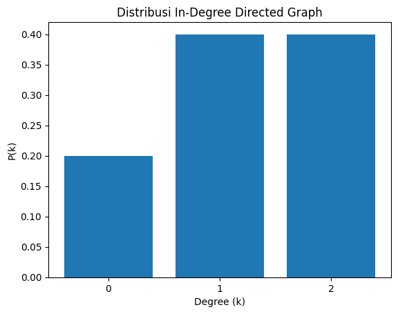
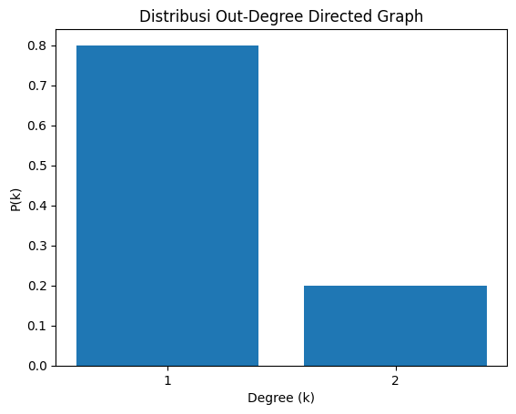
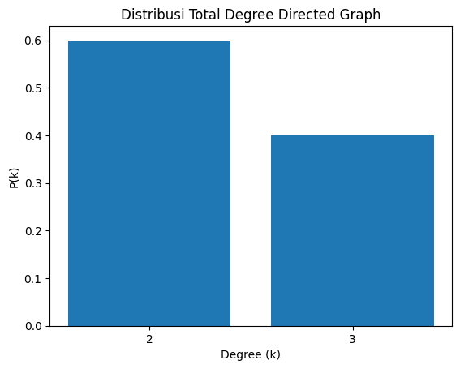
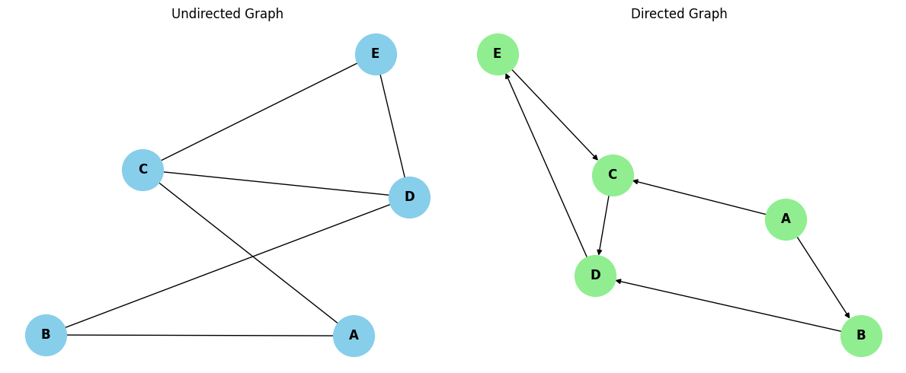

Tugas Graph#
Membuat graph 5 vertex berarah dan tidak berarah, menggunakan network kx
import networkx as nx
import matplotlib.pyplot as plt
# ==========================
# 1. GRAPH TIDAK BERARAH
# ==========================
G1 = nx.Graph()
G1.add_nodes_from(["A", "B", "C", "D", "E"])
G1.add_edges_from([
("A", "B"),
("A", "C"),
("B", "D"),
("C", "D"),
("C", "E"),
("D", "E")
])
# ==========================
# 2. GRAPH BERARAH
# ==========================
G2 = nx.DiGraph()
G2.add_nodes_from(["A", "B", "C", "D", "E"])
G2.add_edges_from([
("A", "B"),
("A", "C"),
("B", "D"),
("C", "D"),
("D", "E"),
("E", "C")
])
# Posisi vertex
pos = {
"A": (0, 1),
"B": (1.2, 1.7),
"C": (1.2, 0.3),
"D": (2.5, 1.7),
"E": (2.5, 0.3)
}
# Visualisasi
fig, ax = plt.subplots(1, 2, figsize=(12, 5))
# Graph tidak berarah
nx.draw(
G1, pos, ax=ax[0],
with_labels=True,
node_color="skyblue",
node_size=1500,
font_weight="bold",
width=2
)
ax[0].set_title("Graph Tidak Berarah")
# Graph berarah
nx.draw(
G2, pos, ax=ax[1],
with_labels=True,
node_color="lightgreen",
node_size=1500,
font_weight="bold",
arrows=True,
arrowsize=22,
width=2
)
ax[1].set_title("Graph Berarah")
plt.tight_layout()
plt.show()

menghitung degree
import networkx as nx
# Graph tidak berarah
G1 = nx.Graph()
G1.add_edges_from([
("A", "B"),
("A", "C"),
("B", "D"),
("C", "D"),
("C", "E"),
("D", "E")
])
print("DEGREE GRAPH TIDAK BERARAH")
for vertex, degree in G1.degree():
print(vertex, "=", degree)
# Graph berarah
G2 = nx.DiGraph()
G2.add_edges_from([
("A", "B"),
("A", "C"),
("B", "D"),
("C", "D"),
("D", "E"),
("E", "C")
])
print("\nDEGREE GRAPH BERARAH")
for vertex in G2.nodes():
print(
vertex,
"| In-Degree =", G2.in_degree(vertex),
"| Out-Degree =", G2.out_degree(vertex),
"| Total Degree =", G2.degree(vertex)
)
DEGREE GRAPH TIDAK BERARAH
A = 2
B = 2
C = 3
D = 3
E = 2
DEGREE GRAPH BERARAH
A | In-Degree = 0 | Out-Degree = 2 | Total Degree = 2
B | In-Degree = 1 | Out-Degree = 1 | Total Degree = 2
C | In-Degree = 2 | Out-Degree = 1 | Total Degree = 3
D | In-Degree = 2 | Out-Degree = 1 | Total Degree = 3
E | In-Degree = 1 | Out-Degree = 1 | Total Degree = 2
distribusi derajatnya
import networkx as nx
import matplotlib.pyplot as plt
from collections import Counter
# Graph tidak berarah
G1 = nx.Graph()
G1.add_edges_from([
("A", "B"), ("A", "C"),
("B", "D"), ("C", "D"),
("C", "E"), ("D", "E")
])
# Graph berarah
G2 = nx.DiGraph()
G2.add_edges_from([
("A", "B"), ("A", "C"),
("B", "D"), ("C", "D"),
("D", "E"), ("E", "C")
])
def distribusi_degree(degree_list, judul):
frekuensi = Counter(degree_list)
total = len(degree_list)
print("\n", judul)
print("Degree | Frekuensi | Distribusi")
for k in sorted(frekuensi):
jumlah = frekuensi[k]
pk = jumlah / total
print(k, "|", jumlah, "|", round(pk, 2))
# Grafik distribusi
plt.bar(
frekuensi.keys(),
[v / total for v in frekuensi.values()]
)
plt.xlabel("Degree (k)")
plt.ylabel("P(k)")
plt.title(judul)
plt.xticks(sorted(frekuensi.keys()))
plt.show()
# Distribusi graph tidak berarah
distribusi_degree(
[d for v, d in G1.degree()],
"Distribusi Degree Undirected Graph"
)
# Distribusi In-Degree
distribusi_degree(
[d for v, d in G2.in_degree()],
"Distribusi In-Degree Directed Graph"
)
# Distribusi Out-Degree
distribusi_degree(
[d for v, d in G2.out_degree()],
"Distribusi Out-Degree Directed Graph"
)
# Distribusi Total Degree
distribusi_degree(
[d for v, d in G2.degree()],
"Distribusi Total Degree Directed Graph"
)
Distribusi Degree Undirected Graph
Degree | Frekuensi | Distribusi
2 | 3 | 0.6
3 | 2 | 0.4

Distribusi In-Degree Directed Graph
Degree | Frekuensi | Distribusi
0 | 1 | 0.2
1 | 2 | 0.4
2 | 2 | 0.4

Distribusi Out-Degree Directed Graph
Degree | Frekuensi | Distribusi
1 | 4 | 0.8
2 | 1 | 0.2

Distribusi Total Degree Directed Graph
Degree | Frekuensi | Distribusi
2 | 3 | 0.6
3 | 2 | 0.4

Avrage Degree
import networkx as nx
# Graph tidak berarah
G1 = nx.Graph()
G1.add_edges_from([
("A", "B"), ("A", "C"),
("B", "D"), ("C", "D"),
("C", "E"), ("D", "E")
])
# Graph berarah
G2 = nx.DiGraph()
G2.add_edges_from([
("A", "B"), ("A", "C"),
("B", "D"), ("C", "D"),
("D", "E"), ("E", "C")
])
# Average Degree Undirected
avg_undirected = sum(dict(G1.degree()).values()) / G1.number_of_nodes()
# Average Degree Directed
avg_in = sum(dict(G2.in_degree()).values()) / G2.number_of_nodes()
avg_out = sum(dict(G2.out_degree()).values()) / G2.number_of_nodes()
avg_total = sum(dict(G2.degree()).values()) / G2.number_of_nodes()
print("Average Degree Undirected:", avg_undirected)
print("Average In-Degree:", avg_in)
print("Average Out-Degree:", avg_out)
print("Average Total Degree:", avg_total)
Average Degree Undirected: 2.4
Average In-Degree: 1.2
Average Out-Degree: 1.2
Average Total Degree: 2.4
hitung kepadatan
import networkx as nx
# Graph tidak berarah
G1 = nx.Graph()
G1.add_edges_from([
("A", "B"),
("A", "C"),
("B", "D"),
("C", "D"),
("C", "E"),
("D", "E")
])
# Graph berarah
G2 = nx.DiGraph()
G2.add_edges_from([
("A", "B"),
("A", "C"),
("B", "D"),
("C", "D"),
("D", "E"),
("E", "C")
])
# Menghitung density
density_undirected = nx.density(G1)
density_directed = nx.density(G2)
print("Undirected Graph Density:", density_undirected)
print("Directed Graph Density:", density_directed)
print("Undirected Density (%):", density_undirected * 100, "%")
print("Directed Density (%):", density_directed * 100, "%")
Undirected Graph Density: 0.6
Directed Graph Density: 0.3
Undirected Density (%): 60.0 %
Directed Density (%): 30.0 %
matriks agency
import networkx as nx
import pandas as pd
# Membuat graph tidak berarah
G1 = nx.Graph()
G1.add_edges_from([
("A", "B"),
("A", "C"),
("B", "D"),
("C", "D"),
("C", "E"),
("D", "E")
])
# Membuat graph berarah
G2 = nx.DiGraph()
G2.add_edges_from([
("A", "B"),
("A", "C"),
("B", "D"),
("C", "D"),
("D", "E"),
("E", "C")
])
# Urutan vertex
nodes = ["A", "B", "C", "D", "E"]
# Matriks adjacency undirected
matrix1 = nx.to_numpy_array(
G1, nodelist=nodes, dtype=int
)
print("MATRiks ADJACENCY GRAPH TIDAK BERARAH")
print(pd.DataFrame(matrix1, index=nodes, columns=nodes))
# Matriks adjacency directed
matrix2 = nx.to_numpy_array(
G2, nodelist=nodes, dtype=int
)
print("\nMATRIKS ADJACENCY GRAPH BERARAH")
print(pd.DataFrame(matrix2, index=nodes, columns=nodes))
MATRiks ADJACENCY GRAPH TIDAK BERARAH
A B C D E
A 0 1 1 0 0
B 1 0 0 1 0
C 1 0 0 1 1
D 0 1 1 0 1
E 0 0 1 1 0
MATRIKS ADJACENCY GRAPH BERARAH
A B C D E
A 0 1 1 0 0
B 0 0 0 1 0
C 0 0 0 1 0
D 0 0 0 0 1
E 0 0 1 0 0
koefisien klasterisasi
import networkx as nx
import matplotlib.pyplot as plt
# Graph tidak berarah
G1 = nx.Graph()
G1.add_edges_from([
("A", "B"),
("A", "C"),
("B", "D"),
("C", "D"),
("C", "E"),
("D", "E")
])
# Graph berarah
G2 = nx.DiGraph()
G2.add_edges_from([
("A", "B"),
("A", "C"),
("B", "D"),
("C", "D"),
("D", "E"),
("E", "C")
])
# Clustering coefficient undirected
print("UNDIRECTED GRAPH")
for v, c in nx.clustering(G1).items():
print(v, "=", round(c, 3))
avg1 = nx.average_clustering(G1)
print("Average Clustering:", round(avg1, 3))
# Clustering coefficient directed
print("\nDIRECTED GRAPH")
for v, c in nx.clustering(G2).items():
print(v, "=", round(c, 3))
avg2 = nx.average_clustering(G2)
print("Average Clustering:", round(avg2, 3))
# Visualisasi perbandingan
fig, ax = plt.subplots(1, 2, figsize=(12, 5))
nx.draw(G1, with_labels=True, node_color="skyblue",
node_size=1500, font_weight="bold", ax=ax[0])
ax[0].set_title("Undirected Graph")
nx.draw(G2, with_labels=True, node_color="lightgreen",
node_size=1500, font_weight="bold",
arrows=True, ax=ax[1])
ax[1].set_title("Directed Graph")
plt.tight_layout()
plt.show()
UNDIRECTED GRAPH
A = 0
B = 0
C = 0.333
D = 0.333
E = 1.0
Average Clustering: 0.333
DIRECTED GRAPH
A = 0
B = 0
C = 0.167
D = 0.167
E = 0.5
Average Clustering: 0.167

diameter jarak terpendeknya
import networkx as nx
# Graph tidak berarah
G1 = nx.Graph()
G1.add_edges_from([
("A", "B"),
("A", "C"),
("B", "D"),
("C", "D"),
("C", "E"),
("D", "E")
])
# Graph berarah
G2 = nx.DiGraph()
G2.add_edges_from([
("A", "B"),
("A", "C"),
("B", "D"),
("C", "D"),
("D", "E"),
("E", "C")
])
# Diameter undirected
print("Diameter Undirected:", nx.diameter(G1))
# Diameter directed
if nx.is_strongly_connected(G2):
print("Diameter Directed:", nx.diameter(G2))
else:
print("Directed Graph tidak strongly connected")
# Menghitung SCC terbesar
scc = max(
nx.strongly_connected_components(G2),
key=len
)
subgraph = G2.subgraph(scc).copy()
print("SCC terbesar:", scc)
print("Diameter SCC:", nx.diameter(subgraph))
Diameter Undirected: 2
Directed Graph tidak strongly connected
SCC terbesar: {'C', 'D', 'E'}
Diameter SCC: 2